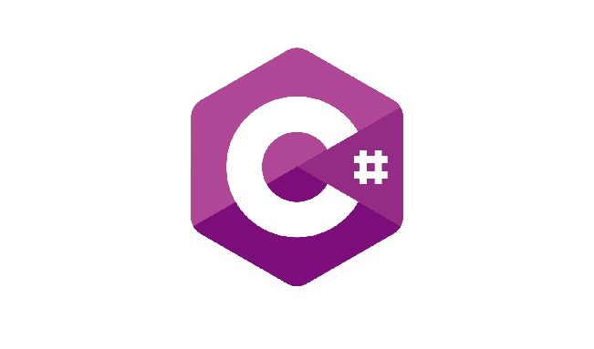
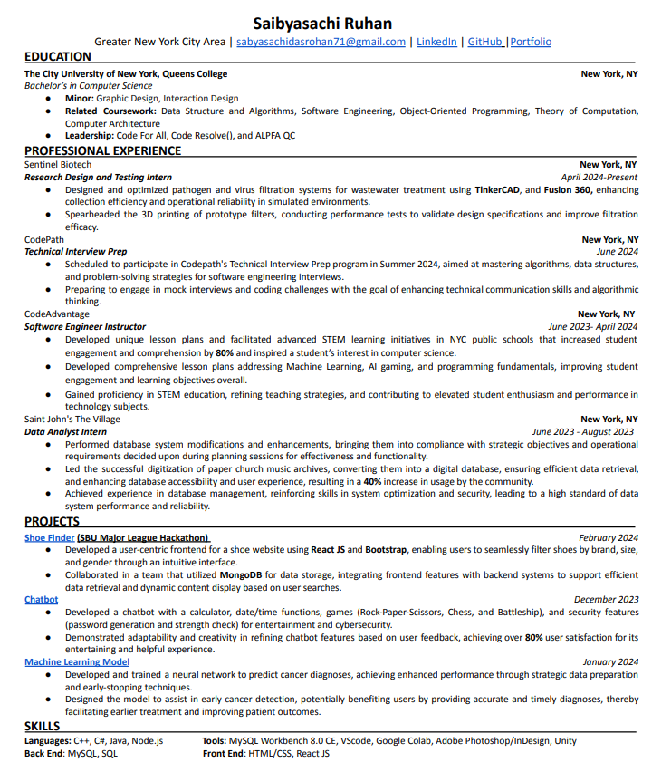
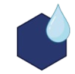
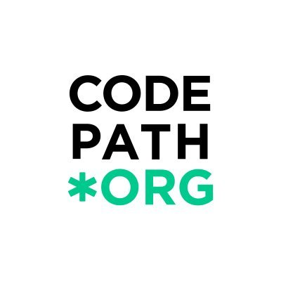

About Me
Hi. My name is Saibyasachi Ruhan. I am a student at CUNY Queens College, majoring in Computer Science. I'm passionate about technology and software development.
Technical Skills


- 


Resume

Experience

Research Design and Testing Intern
Sentinel Biotech · Internship/p>
April 2024 - Present
New York, United States · On-site
- Designed and optimized pathogen and virus filtration systems for wastewater treatment using TinkerCAD, and Fusion 360, enhancing collection efficiency and operational reliability in simulated environments.
- Spearheaded the 3D printing of prototype filters, conducting performance tests to validate design specifications and improve filtration efficacy.

Technical Interview Prep
CodePath
New York, United States · Remote
- Scheduled to participate in Codepath's Technical Interview Prep program in Summer 2024, aimed at mastering algorithms, data structures, and problem-solving strategies for software engineering interviews.
- Preparing to engage in mock interviews and coding challenges with the goal of enhancing technical communication skills and algorithmic thinking

Software Engineer Instructor
CodeAdvantage · Part-time
June 2023 - April 2024
New York, United States · On-site
- Developed unique lesson plans and facilitated advanced STEM learning initiatives in NYC public schools that increased student engagement and comprehension by 80% and inspired a student’s interest in computer science.
- Developed comprehensive lesson plans addressing Machine Learning, AI gaming, and programming fundamentals, improving student engagement and learning objectives overall.
- Gained proficiency in STEM education, refining teaching strategies, and contributing to elevated student enthusiasm and performance in technology subjects.

Data Analytics Intern
Saint John's in the Village · Internship
Jun 2023 - Aug 2023
New York, United States
- Performed database system modifications and enhancements, bringing them into compliance with strategic objectives and operational requirements decided upon during planning sessions for effectiveness and functionality.
- Led the successful digitization of paper church music archives, converting and organizing them into a comprehensive digital database, ensuring efficient data retrieval and long-term preservation, and enhancing database accessibility and user experience, resulting in a 40% increase in usage by church staff.
- Achieved experience in database management, reinforcing skills in system optimization and security, leading to a high standard of data system performance and reliability.

Associate
H&M · Part-time
May 2021 - Present
- Boosted sales performance by delivering expert purchase guidance and effectively promoting complementary products.
- Led the onboarding and development of new staff, instilling advanced selling strategies and adherence to industry best practices.
- Improved social and communication skills through teamwork, leadership, and smart sales conversations.
Contact
If you have any questions or comments, please reach out to me using the form below: